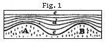

The Student’s Elements of Geology
Mineral Composition of Strata. — Siliceous Rocks. — Argillaceous. — Calcareous. — Gypsum. — Forms of Stratification. — Original Horizontality. — Thinning out. — Diagonal Arrangement. — Ripple-mark.
In pursuance of the arrangement explained in the last chapter, we shall begin by examining the aqueous or sedimentary rocks, which are for the most part distinctly stratified, and contain fossils. We may first study them with reference to their mineral composition, external appearance, position, mode of origin, organic contents, and other characters which belong to them as aqueous formations, independently of their age, and we may afterwards consider them chronologically or with reference to the successive geological periods when they originated.
I have already given an outline of the data which led to the belief that the stratified and fossiliferous rocks were originally deposited under water; but, before entering into a more detailed investigation, it will be desirable to say something of the ordinary materials of which such strata are composed. These may be said to belong principally to three divisions, the siliceous, the argillaceous, and the calcareous, which are formed respectively of flint, clay, and carbonate of lime. Of these, the siliceous are chiefly made up of sand or flinty grains; the argillaceous, or clayey, of a mixture of siliceous matter with a certain proportion, about a fourth in weight, of aluminous earth; and, lastly, the calcareous rocks, or limestones, of carbonic acid and lime.
Siliceous and Arenaceous Rocks.—To speak first of the sandy division: beds of loose sand are frequently met with, of which the grains consist entirely of silex, which term comprehends all purely siliceous minerals, as quartz and common flint. Quartz is silex in its purest form. Flint usually contains some admixture of alumina and oxide of iron. The siliceous grains in sand are usually rounded, as if by the action of running water. Sandstone is an aggregate of such grains, which often cohere together without any visible cement, but more commonly are bound together
by a slight quantity of siliceous or calcareous matter, or by oxide of iron or clay.
Pure siliceous rocks may be known by not effervescing when a drop of nitric, sulphuric or other acid is applied to them, or by the grains not being readily scratched or broken by ordinary pressure. In nature there is every intermediate gradation, from perfectly loose sand to the hardest sandstone. In micaceous sandstones mica is very abundant; and the thin silvery plates into which that mineral divides are often arranged in layers parallel to the planes of stratification, giving a slaty or laminated texture to the rock.
When sandstone is coarse-grained, it is usually called grit. If the grains are rounded, and large enough to be called pebbles, it becomes a conglomerate or pudding-stone, which may consist of pieces of one or of many different kinds of rock. A conglomerate, therefore, is simply gravel bound together by cement.
Argillaceous Rocks.—Clay, strictly speaking, is a mixture of silex or flint with a large proportion, usually about one fourth, of alumina, or argil; but in common language, any earth which possesses sufficient ductility, when kneaded up with water, to be fashioned like paste by the hand, or by the potter’s lathe, is called a clay; and such clays vary greatly in their composition, and are, in general, nothing more than mud derived from the decomposition or wearing down of rocks. The purest clay found in nature is porcelain clay, or kaolin, which results from the decomposition of a rock composed of feldspar and quartz, and it is almost always mixed with quartz. The kaolin of China consists of 71·15 parts of silex, 15·86 of alumine, 1·92 of lime, and 6·73 of water;* but other porcelain clays differ materially, that of Cornwall being composed, according to Boase, of nearly equal parts of silica and alumine, with 1 per cent of magnesia.† Shale has also the property, like clay, of becoming plastic in water: it is a more solid form of clay, or argillaceous matter, condensed by pressure. It always divides into laminæ more or less regular.
One general character of all argillaceous rocks is to give out a peculiar, earthy odour when breathed upon, which is a test of the presence of alumine, although it does not belong to pure alumine, but, apparently, to the combination of that substance with oxide of iron.‡
Calcareous Rocks.—This division comprehends those rocks which, like chalk, are composed chiefly of lime and carbonic
* W. Phillips, Mineralogy, p.33.
† Phil. Mag., vol. x, 1837.
‡ See W. Phillips’s Mineralogy, “Alumine.”
acid. Shells and corals are also formed of the same elements, with the addition of animal matter. To obtain pure lime it is necessary to calcine these calcareous substances, that is to say, to expose them to heat of sufficient intensity to drive off the carbonic acid, and other volatile matter. White chalk is sometimes pure carbonate of lime; and this rock, although usually in a soft and earthy state, is occasionally sufficiently solid to be used for building, and even passes into a compact stone, or a stone of which the separate parts are so minute as not to be distinguishable from each other by the naked eye.
Many limestones are made up entirely of minute fragments of shells and coral, or of calcareous sand cemented together. These last might be called “calcareous sandstones;” but that term is more properly applied to a rock in which the grains are partly calcareous and partly siliceous, or to quartzose sandstones, having a cement of carbonate of lime.
The variety of limestone called oolite is composed of numerous small egg-like grains, resembling the roe of a fish, each of which has usually a small fragment of sand as a nucleus, around which concentric layers of calcareous matter have accumulated.
Any limestone which is sufficiently hard to take a fine polish is called marble. Many of these are fossiliferous; but statuary marble, which is also called saccharoid limestone, as having a texture resembling that of loaf-sugar, is devoid of fossils, and is in many cases a member of the metamorphic series.
Siliceous limestone is an intimate mixture of carbonate of lime and flint, and is harder in proportion as the flinty matter predominates.
The presence of carbonate of lime in a rock may be ascertained by applying to the surface a small drop of diluted sulphuric, nitric, or muriatic acid, or strong vinegar; for the lime, having a greater chemical affinity for any one of these acids than for the carbonic, unites immediately with them to form new compounds, thereby becoming a sulphate, nitrate or muriate of lime. The carbonic acid, when thus liberated from its union with the lime, escapes in a gaseous form, and froths up or effervesces as it makes its way in small bubbles through the drop of liquid. This effervescence is brisk or feeble in proportion as the limestone is pure or impure, or, in other words, according to the quantity of foreign matter mixed with the carbonate of lime. Without the aid of this test, the most experienced eye can not always detect the presence of carbonate of lime in rocks.
The above-mentioned three classes of rocks, the siliceous, argillaceous, and calcareous, pass continually into each other, and rarely occur in a perfectly separate and pure form. Thus it is an exception to the general rule to meet with a limestone as pure as ordinary white chalk, or with clay as aluminous as that used in Cornwall for porcelain, or with sand so entirely composed of siliceous grains as the white sand of Alum Bay, in the Isle of Wight, employed in the manufacture of glass, or sandstone so pure as the grit of Fontainebleau, used for pavement in France. More commonly we find sand and clay, or clay and marl, intermixed in the same mass. When the sand and clay are each in considerable quantity, the mixture is called loam. If there is much calcareous matter in clay it is called marl; but this term has unfortunately been used so vaguely, as often to be very ambiguous. It has been applied to substances in which there is no lime; as, to that red loam usually called red marl in certain parts of England. Agriculturists were in the habit of calling any soil a marl which, like true marl, fell to pieces readily on exposure to the air. Hence arose the confusion of using this name for soils which, consisting of loam, were easily worked by the plough, though devoid of lime.
Marl slate bears the same relation to marl which shale bears to clay, being a calcareous shale. It is very abundant in some countries, as in the Swiss Alps. Argillaceous or marly limestone is also of common occurrence.
There are few other kinds of rock which enter so largely into the composition of sedimentary strata as to make it necessary to dwell here on their characters. I may, however, mention two others—magnesian limestone or dolomite, and gypsum. Magnesian limestone is composed of carbonate of lime and carbonate of magnesia; the proportion of the latter amounting in some cases to nearly one half. It effervesces much more slowly and feebly with acids than common limestone. In England this rock is generally of a yellowish colour; but it varies greatly in mineralogical character, passing from an earthy state to a white compact stone of great hardness. Dolomite, so common in many parts of Germany and France, is also a variety of magnesian limestone, usually of a granular texture.
Gypsum is a rock composed of sulphuric acid, lime, and water. It is usually a soft whitish-yellow rock, with a texture resembling that of loaf-sugar, but sometimes it is entirely composed of lenticular crystals. It is insoluble in acids, and does not effervesce like chalk and dolomite, because it does not contain carbonic acid gas, or fixed air, the lime
being already combined with sulphuric acid, for which it has a stronger affinity than for any other. Anhydrous gypsum is a rare variety, into which water does not enter as a component part. Gypseous marl is a mixture of gypsum and marl. Alabaster is a granular and compact variety of gypsum found in masses large enough to be used in sculpture and architecture. It is sometimes a pure snow-white substance, as that of Volterra in Tuscany, well known as being carved for works of art in Florence and Leghorn. It is a softer stone than marble, and more easily wrought.
Forms of Stratification.—A series of strata sometimes consists of one of the above rocks, sometimes of two or more in alternating beds.
Thus, in the coal districts of England, for example, we often pass through several beds of sandstone, some of finer, others of coarser grain, some white, others of a dark colour, and below these, layers of shale and sandstone or beds of shale, divisible into leaf-like laminæ, and containing beautiful impressions of plants. Then again we meet with beds of pure and impure coal, alternating with shales and sandstones, and underneath the whole, perhaps, are calcareous strata, or beds of limestone, filled with corals and marine shells, each bed distinguishable from another by certain fossils, or by the abundance of particular species of shells or zoophytes.
This alternation of different kinds of rock produces the most distinct stratification; and we often find beds of limestone and marl, conglomerate and sandstone, sand and clay, recurring again and again, in nearly regular order, throughout a series of many hundred strata. The causes which may produce these phenomena are various, and have been fully discussed in my treatise on the modern changes of the earth’s surface.* It is there seen that rivers flowing into lakes and seas are charged with sediment, varying in quantity, composition, colour, and grain according to the seasons; the waters are sometimes flooded and rapid, at other periods low and feeble; different tributaries, also, draining peculiar countries and soils, and therefore charged with peculiar sediment, are swollen at distinct periods. It was also shown that the waves of the sea and currents undermine the cliffs during wintry storms, and sweep away the materials into the deep, after which a season of tranquillity succeeds, when nothing but the finest mud is spread by the movements of the ocean over the same submarine area.
It is not the object of the present work to give a description
* Consult Index to Principles of Geology, “Stratification,” “Currents,” “Deltas,” “Water,” etc.
of these operations, repeated as they are, year after year, and century after century; but I may suggest an explanation of the manner in which some micaceous sandstones have originated, namely, those in which we see innumerable thin layers of mica dividing layers of fine quartzose sand. I observed the same arrangement of materials in recent mud deposited in the estuary of Laroche St. Bernard in Brittany, at the mouth of the Loire. The surrounding rocks are of gneiss, which, by its waste, supplies the mud: when this dries at low water, it is found to consist of brown laminated clay, divided by thin seams of mica. The separation of the mica in this case, or in that of micaceous sandstones, may be thus understood. If we take a handful of quartzose sand, mixed with mica, and throw it into a clear running stream, we see the materials immediately sorted by the water, the grains of quartz falling almost directly to the bottom, while the plates of mica take a much longer time to reach the bottom, and are carried farther down the stream. At the first instant the water is turbid, but immediately after the flat surfaces of the plates of mica are seen all alone, reflecting a silvery light, as they descend slowly, to form a distinct micaceous lamina. The mica is the heavier mineral of the two; but it remains a longer time suspended in the fluid, owing to its greater extent of surface. It is easy, therefore, to perceive that where such mud is acted upon by a river or tidal current, the thin plates of mica will be carried farther, and not deposited in the same places as the grains of quartz; and since the force and velocity of the stream varies from time to time, layers of mica or of sand will be thrown down successively on the same area.
Original Horizontality.—It is said generally that the upper and under surfaces of strata, or the “planes of stratification,” are parallel. Although this is not strictly true, they make an approach to parallelism, for the same reason that sediment is usually deposited at first in nearly horizontal layers. Such an arrangement can by no means be attributed to an original evenness or horizontality in the bed of the sea: for it is ascertained that in those places where no matter has been recently deposited, the bottom of the ocean is often as uneven as that of the dry land, having in like manner its hills, valleys, and ravines. Yet if the sea should go down, or be removed from near the mouth of a large river where a delta has been forming, we should see extensive plains of mud and sand laid dry, which, to the eye, would appear perfectly level, although, in reality, they would slope gently from the land towards the sea.
This tendency in newly-formed strata to assume a horizontal position arises principally from the motion of the water, which forces along particles of sand or mud at the bottom, and causes them to settle in hollows or depressions where they are less exposed to the force of a current than when they are resting on elevated points. The velocity of the current and the motion of the superficial waves diminish from the surface downward, and are least in those depressions where the water is deepest.
A good illustration of the principle here alluded to may be sometimes seen in the neighbourhood of a volcano, when a section, whether natural or artificial, has laid open to view a succession of various-coloured layers of sand and ashes, which have fallen in showers upon uneven ground. Thus let A B (Fig. 1) be two ridges, with an intervening valley. These original inequalities of the surface have been gradually effaced by beds of sand and ashes c, d, e, the surface at e being quite level. It will be seen that, although the materials of the first layers have accommodated themselves in a great degree to the shape of the ground A B, yet each bed is thickest at the bottom. At first a great many particles would be carried by their own gravity down the steep sides of A and B, and others would afterwards be blown by the wind as they fell off the ridges, and would settle in the hollow, which would thus become more and more effaced as the strata accumulated from c to e. Now, water in motion can exert this levelling power on similar materials more easily than air, for almost all stones lose in water more than a third of the weight which they have in air, the specific gravity of rocks being in general as 2½ when compared to that of water, which is estimated at 1. But the buoyancy of sand or mud would be still greater in the sea, as the density of salt-water exceeds that of fresh.
Yet, however uniform and horizontal may be the surface of new deposits in general, there are still many disturbing causes, such as eddies in the water, and currents moving first in one and then in another direction, which frequently cause
irregularities. We may sometimes follow a bed of limestone, shale, or sandstone, for a distance of many hundred yards continuously; but we generally find at length that each individual stratum thins out, and allows the beds which were previously above and below it to meet. If the materials are coarse, as in grits and conglomerates, the same beds can rarely be traced many yards without varying in size, and often coming to an end abruptly. (See Fig. 2.)
Diagonal or Cross Stratification.—There is also another phenomenon of frequent occurrence. We find a series of larger strata, each of which is composed of a number of minor layers placed obliquely to the general planes of stratification. To this diagonal arrangement the name of “false or cross bedding” has been given. Thus in the section (Fig. 3) we see seven or eight large beds of loose sand, yellow and brown, and the lines a, b, c mark some of the principal planes of stratification, which are nearly horizontal. But the greater part of the subordinate laminæ do not conform to these planes, but have often a steep slope, the inclination being sometimes towards opposite points of the compass. When the sand is loose and incoherent, as in the case here represented, the deviation from parallelism of the slanting laminæ can not possibly be accounted for by any rearrangement of the particles acquired during the consolidation of the rock. In what manner, then, can such irregularities be
due to original deposition? We must suppose that at the bottom of the sea, as well as in the beds of rivers, the motions of waves, currents, and eddies often cause mud, sand, and gravel to be thrown down in heaps on particular spots, instead of being spread out uniformly over a wide area. Sometimes, when banks are thus formed, currents may cut passages through them, just as a river forms its bed.
Suppose the bank A (Fig. 4) to be thus formed with a steep sloping side, and, the water being in a tranquil state, the layer of sediment No. 1 is thrown down upon it, conforming nearly to its surface. Afterwards the other layers, 2, 3, 4, may be deposited in succession, so that the bank B C D is formed. If the current then increases in velocity, it may cut away the upper portion of this mass down to the dotted line e, and deposit the materials thus removed farther on, so as to form the layers 5, 6, 7, 8. We have now the bank B, C, D, E (Fig. 5), of which the surface is almost level, and on which the nearly horizontal layers, 9, 10, 11, may then accumulate. It was shown in Fig. 3 that the diagonal layers of successive strata may sometimes have an opposite slope. This is well seen in some cliffs of loose sand on the Suffolk coast. A portion of one of these is represented in Fig. 6, where the layers, of which there are about six in the thickness of an inch, are composed of quartzose grains. This arrangement may have been due to the altered direction of the tides and currents in the same place.
The description above given of the slanting position of the minor layers constituting a single stratum is in certain cases applicable on a much grander scale to masses several hundred feet thick, and many miles in extent. A fine example may be seen at the base of the Maritime Alps near Nice. The mountains here terminate abruptly in the sea, so that a depth of one hundred fathoms is often found within a stone’s throw of the beach, and sometimes a depth of 3000 feet within half a mile. But at certain points, strata of sand, marl, or conglomerate intervene between the shore and the mountains, as in the section (Fig. 7), where a vast succession of slanting beds of gravel and sand may be traced from the sea to Monte Calvo, a distance of no less than nine miles in a straight line. The dip of these beds is remarkably uniform, being always southward or towards the Mediterranean, at an angle of about 25°. They are exposed to view in nearly vertical precipices, varying from 200 to 600 feet in height, which bound the valley through which the river Magnan flows. Although, in a general view, the strata appear to be parallel and uniform, they are nevertheless found, when examined closely, to be wedge-shaped, and to thin out when followed for a few hundred feet or yards, so that we may suppose them to have been thrown down originally upon the side of a steep bank where a river or Alpine torrent discharged itself into a deep and tranquil sea, and formed a delta, which advanced gradually from the base of Monte Calvo to a distance of nine miles from the original shore. If subsequently this part of the Alps and bed of the sea were raised 700 feet, the delta may have emerged, a deep channel may then have been cut through it by the river, and the coast may at the same time have acquired its present configuration.
It is well known that the torrents and streams which now
descend from the Alpine declivities to the shore, bring down annually, when the snow melts, vast quantities of shingle and sand, and then, as they subside, fine mud, while in summer they are nearly or entirely dry; so that it may be safely assumed that deposits like those of the valley of the Magnan, consisting of coarse gravel alternating with fine sediment, are still in progress at many points, as, for instance, at the mouth of the Var. They must advance upon the Mediterranean in the form of great shoals terminating in a steep talus; such being the original mode of accumulation of all coarse materials conveyed into deep water, especially where they are composed in great part of pebbles, which can not be transported to indefinite distances by currents of moderate velocity. By inattention to facts and inferences of this kind, a very exaggerated estimate has sometimes been made of the supposed depth of the ancient ocean. There can be no doubt, for example, that the strata a, Fig. 7, or those nearest to Monte Calvo, are older than those indicated by b, and these again were formed before c; but the vertical depth of gravel and sand in any one place can not be proved to amount even to 1000 feet, although it may perhaps be much greater, yet probably never exceeding at any point 3000 or 4000 feet. But were we to assume that all the strata were once horizontal, and that their present dip or inclination was due to subsequent movements, we should then be forced to conclude that a sea several miles deep had been filled up with alternate layers of mud and pebbles thrown down one upon another.
In the locality now under consideration, situated a few miles to the west of Nice, there are many geological data, the details of which can not be given in this place, all leading to the opinion that, when the deposit of the Magnan was formed, the shape and outline of the Alpine declivities and the shore greatly resembled what we now behold at many points in the neighbourhood. That the beds a, b, c, d are of comparatively modern date is proved by this fact, that in seams of loamy marl intervening between the pebbly beds are fossil shells, half of which belong to species now living in the Mediterranean.
Ripple-mark.—The ripple-mark, so common on the surface of sandstones of all ages (see Fig. 8), and which is so often seen on the sea-shore at low tide, seems to originate in the drifting of materials along the bottom of the water, in a manner very similar to that which may explain the inclined layers above described. This ripple is not entirely confined to the beach between high and low water mark, but is also produced on sands which are constantly covered by water. Similar undulating ridges and furrows may also be sometimes seen on the surface of drift snow and blown sand.
The ripple-mark is usually an indication of a sea-beach, or of water from six to ten feet deep, for the agitation caused by waves even during storms extends to a very slight depth. To this rule, however, there are some exceptions, and recent ripple-marks have been observed at the depth of 60 or 70 feet. It has also been ascertained that currents or large bodies of water in motion may disturb mud and sand at the depth of 300 or even 450 feet.* Beach ripple, however, may usually be distinguished from current ripple by frequent changes in its direction. In a slab of sandstone, not more than an inch thick, the furrows or ridges of an ancient ripple may often be seen in several successive laminæ to run towards different points of the compass.
* Darwin, Volcanic Islands, p. 134.